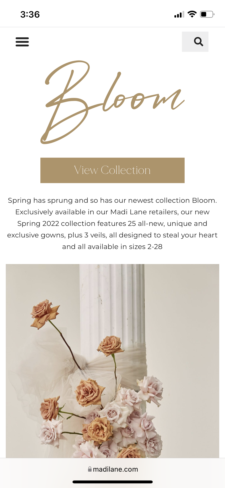
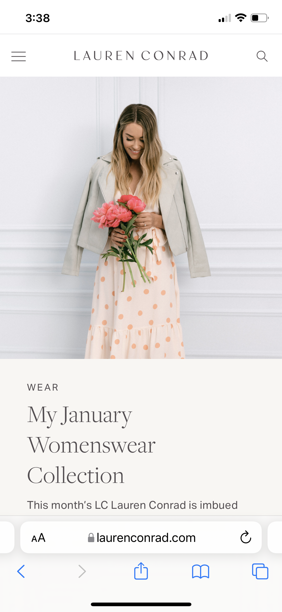

Design Principles Document
Brandi Glover
Visual Hierarchy
Madi Lane Bridal
MadiLane.com

The bridal designer, Madi Lane, uses their website to portray a hierarchy system. Using the hierarchy system allows them to feature important and new aspects of their collections and grab the user's attention to call-to-action buttons.
Rule of Thirds
Luv Bridal
LuvBridal.com
The Luv Bridal uses the rule of thirds in many of their images to make them more captivating and engaging by placing the bride or gown subject outside of the center area. This design principle gives their website design appeal when a user is scrolling through their sections.
White Space
Lauren Conrad
LuvBridal.com

The Lauren Conrad website is very fresh and modern because of their use of white space and clean design. Everything is cleanly organized which allows for the images of their products to stand out.